A témakör célja, hogy megismerkedjünk a JavaScript-tel.
Kód a HTML forráskódon belül 1:
A JavaScript kódot a <script></script> elemen belül helyezhetjük el. Ez viszont három helyen szerepelhet a HTML forráskódban:
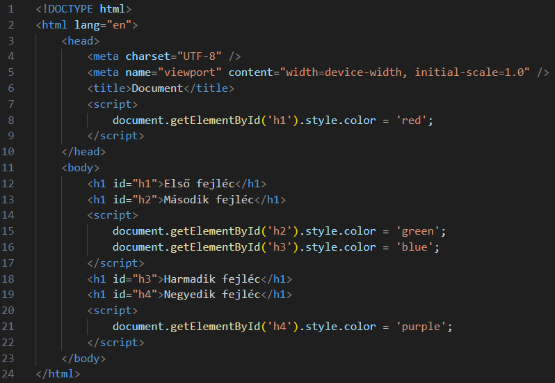
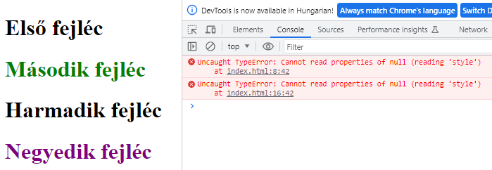
Kód a HTML forráskódon belül 2:
Események (event) kezelése esetén magába az elembe is írhatunk JavaScript kódot egy HTML attribútumba.
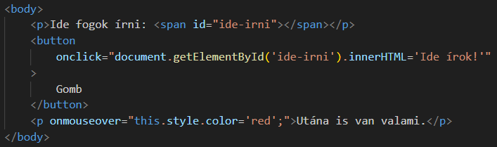
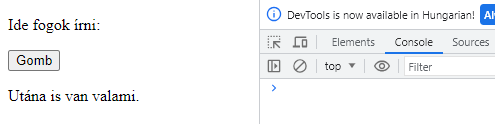
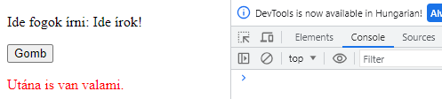
De inkább csak meghívunk egy függvényt:
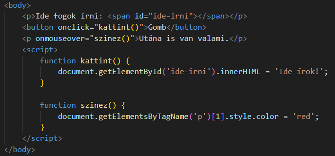
Kód a HTML forráskódon kívül:
Azonban külső JavaScript állományban elhelyezni a kódot a leginkább bevett gyakorlat. Kiterjesztése .js. Elhelyezése a HTML kódban pontosan ugyanúgy történik mint az előbb, csak a <script src="kulsoForras.js"></script> formában.
A külső JavaScript állományok azért is hasznosak, mert több HTML állományban is felhasználhatóak, és mivel a gyorsítótárba (cache) kerülnek, ezért csak egyszer kell meghívni őket, így gyorsítják a weboldalakat!
Több külső script-állomány csatolásához több script-elemet használunk!
A példában kulsoForras.js=gyakorlas.js:
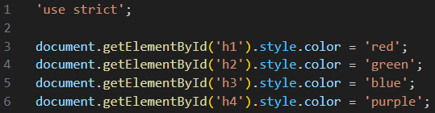
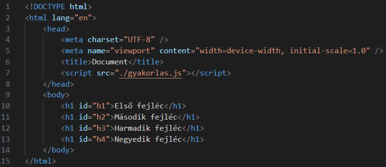
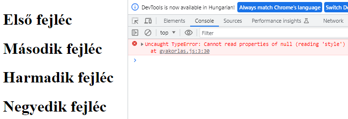
Fontos megjegyzés:
Ekkor, ha defer boolean attribútumot használjuk, akkor felhívjuk a böngésző figyelmét, hogy a script-et csak a body feldogozása után kezdje el elemezni!
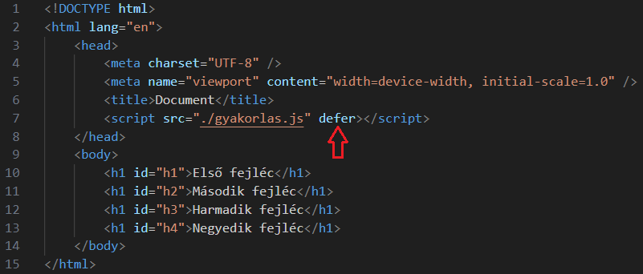
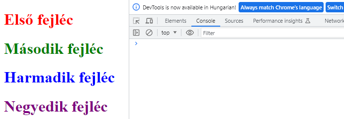
További esetek:
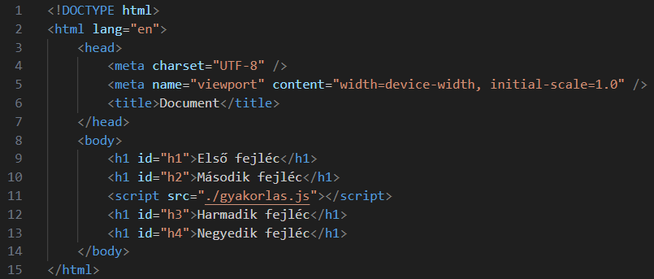
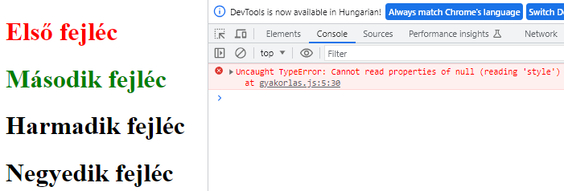
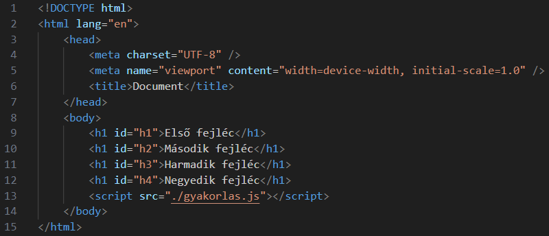
Régebbi kódok esetén találkozhatunk a következő formával:
<script type="text/javascript"></script>
Ez már nem kell, mert a JavaScript az alapértelmezett scriptnyelv a HTML5-ben. A HTML4-ben még nem volt az!
Vagy ezzel:
<script language="javascript"></script>
Ezt sem használjuk már!
"Ősöreg" kódokban:
<script type="text/javascript"><!--...--></script>
Ezzel a HTML komment elemmel a még régebbi böngészők elől rejtették le a script elemben lévő tartalmat, mert nem tudtak vele mit kezdeni!
Tilos használni:
<script src="kulsoForras.js">Valami kód!</script>
Vagy külső állományból dolgozunk, vagy beleírjuk a script elembe kódot, de a kettő együtt nem megy!
Több lehetőség is a rendelkezésünkre áll. Nézzük a szokásos 'Hello World!' kiíratást.
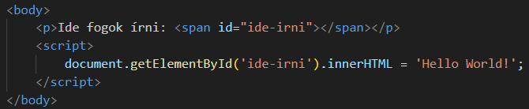
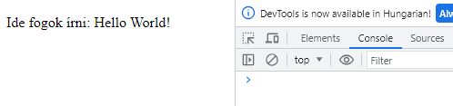
Megjegyzés:
A document a HTML body elemének megfelelő DOM (Document Object Model) elem, objektum. Ezt használja a JavaScript, hogy hozzá tudjon férni meghatározott elemekhez az weboldalon.
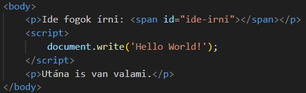
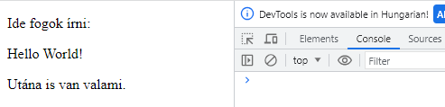
Megjegyzés:
Ha a document.write() metódust azután hívtuk meg, hogy az oldal betöltődött, akkor törölni fogja az egész tartalmat! Ezért csak tesztelési célra használjuk!
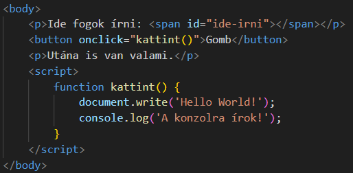
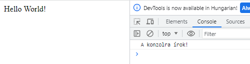
A body objektum is hozzátartozik, és elhagyható előle:
window.body.write() === body.write()
Létezik neki egy window.alert() === alert() metódusa kiíratás céljára. Ez egy kis pop-up ablakba fogja megjeleníteni a tartalmát:
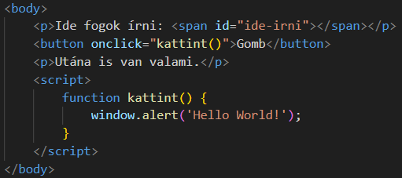
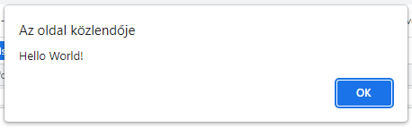
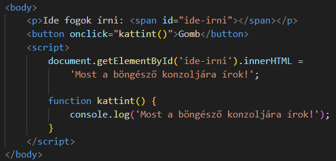
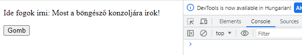
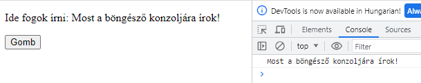
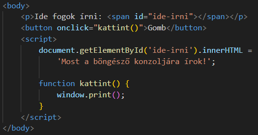
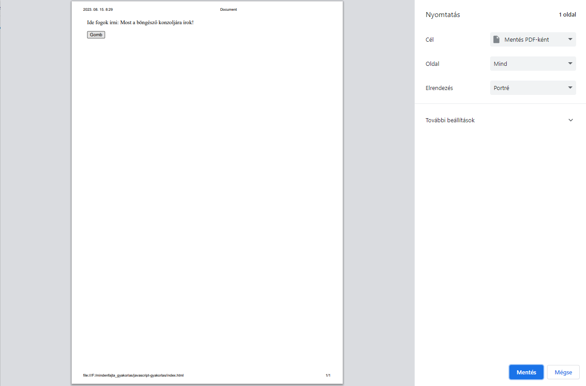
A JavaScript a böngésző alapértelmeztt scriptnyelve, de a különböző igények kielégítése miatt számos új nyelv született, amely bizonyos szolgáltatásokkal, nyelvi elemekkel bővítette a JavaScript-et. Ezek a nyelvek "kétszeres fordításon" transzpiláláson (transpilation) esnek át, hogy futni tudjanak a böngészőben (először "lefordulnak" JavaScript-re):